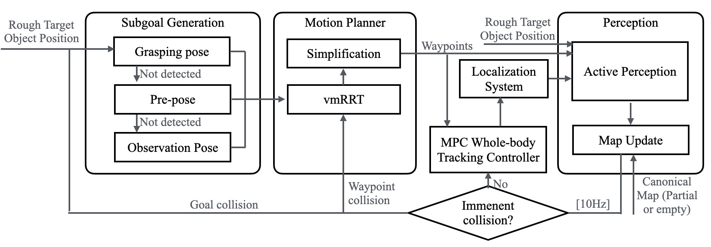
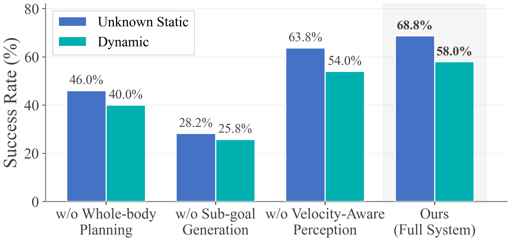
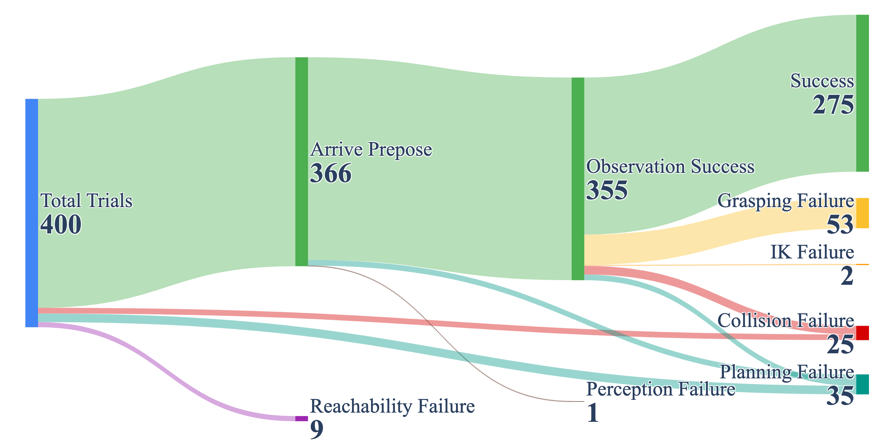
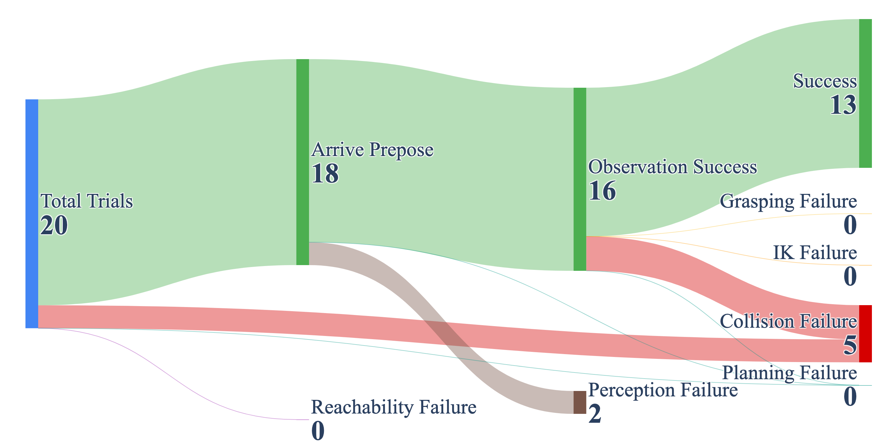
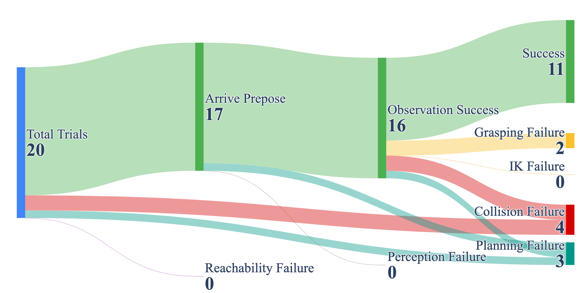
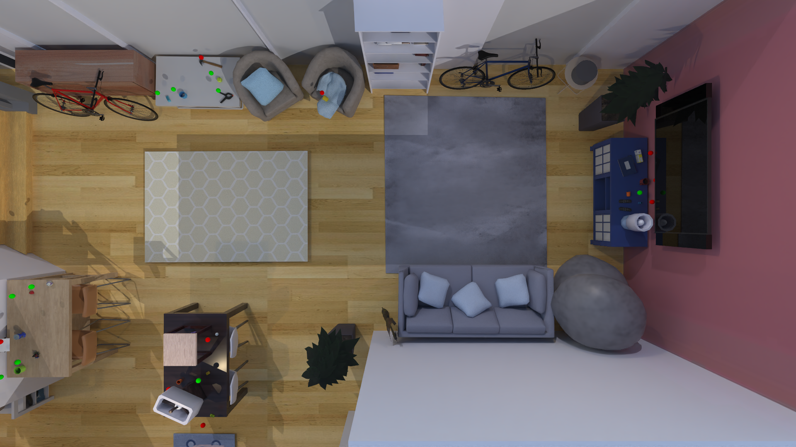
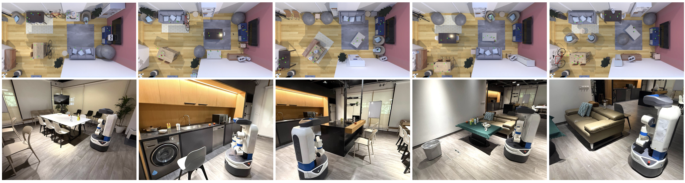
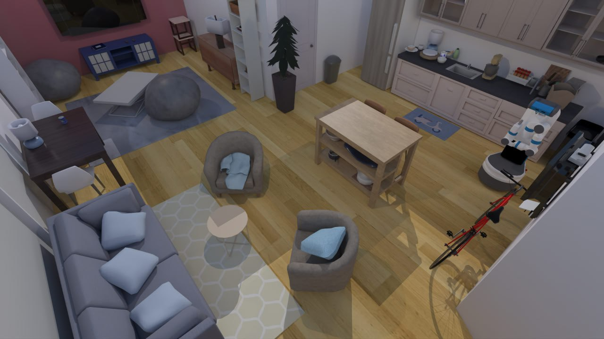
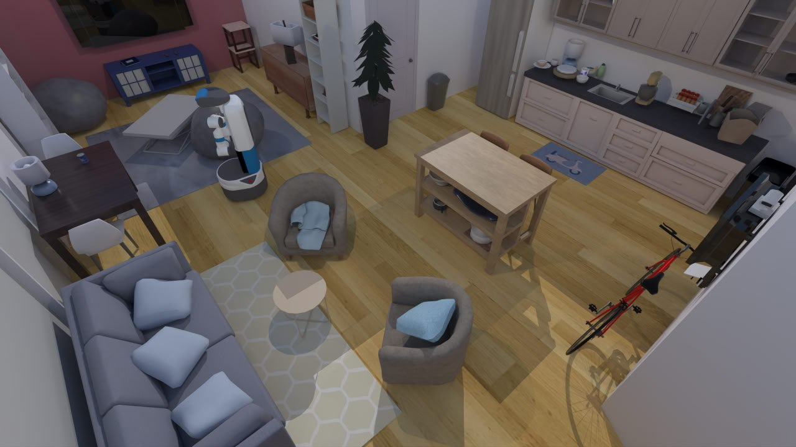
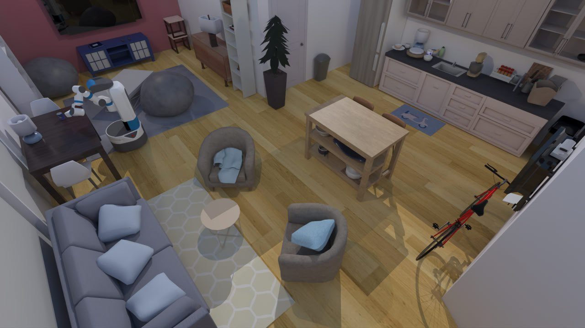

This paper addresses the problem of mobile grasping in dynamic, unknown environments where a robot must operate under a limited field-of-view. The fundamental challenge is the inherent trade-off between "seeing" around to reduce environmental uncertainty and "moving" the body to achieve task progress in a high-dimensional configuration space, subject to visibility constraints.
We propose a unified mobile grasping system comprising two core components: (1) an iterative low-level whole-body planner coupled with velocity-aware active perception to navigate dynamic environments safely; and (2) a hierarchical high-level planner based on behavior trees that adaptively generates subgoals to guide the robot through exploration and runtime failures.
We provide experimental results across 400 dynamic simulation scenarios and real-world deployment on a Fetch mobile manipulator. The results show that in both static unknown environments and dynamic environments with suddenly appearing obstacles, our system achieves success rates of 68.75% and 58.0%, respectively, significantly outperforming baselines in both robustness and safety.

A state-dependent gaze policy πv that switches between observing the target during planning and monitoring the swept volume during execution. Prioritizes collision-critical regions based on velocity and temporal proximity.
An adaptive behavior-tree policy πg with three progressive strategies: direct grasping, pre-grasp repositioning, and observation gathering — enabling runtime recovery from failures.
A novel vmRRT-C (Vectorized Mobile RRT-Connect) planner achieving 50–80 ms planning times for real-time replanning across the 11-DoF heterogeneous configuration space.










@inproceedings{hu2025visibility,
title = {Visibility-Aware Mobile Grasping in Dynamic Environments},
author = {Hu, Tianrun and Xiao, Anxing and Hsu, David and Zhang, Hanbo},
booktitle = {arXiv preprint},
year = {2025}
}